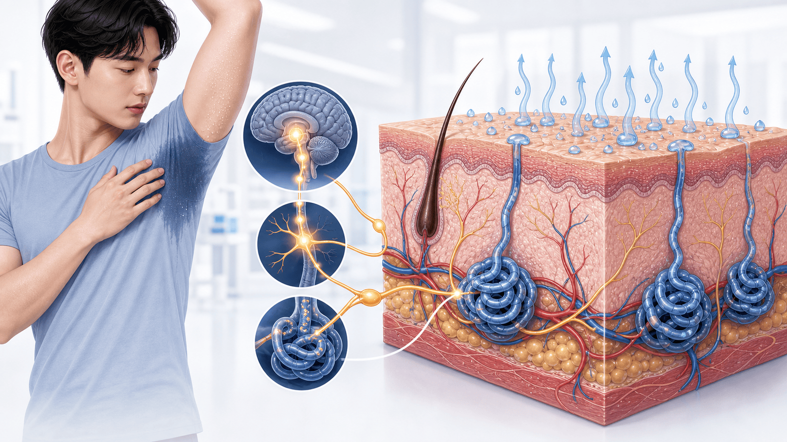
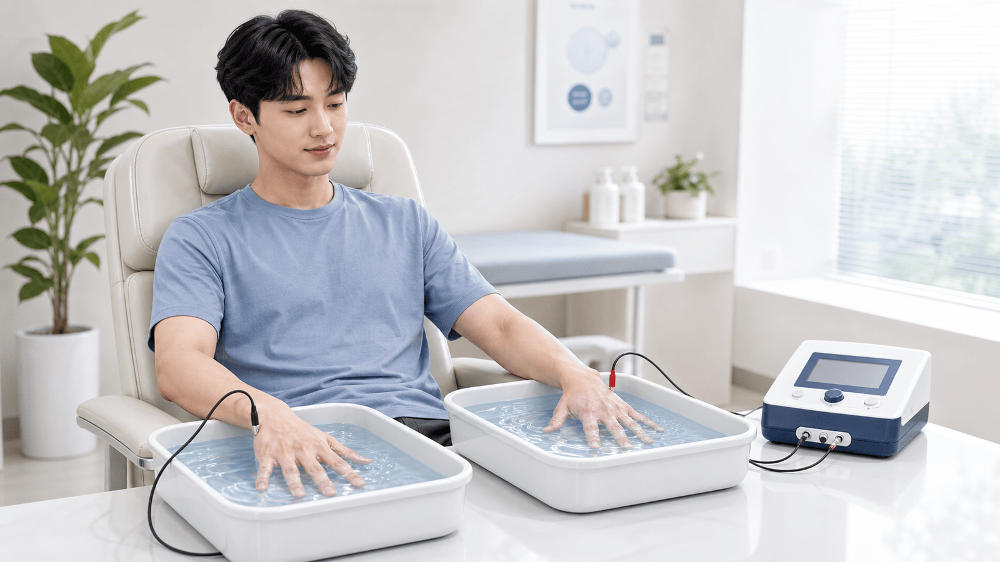

원발성 = 특별한 원인 질환 없이 특정 부위에만 땀이 많은 것 — 전신 질환보다 흔합니다
검사보다 문진과 부위 확인이 먼저입니다

손·발·겨드랑이·얼굴을 나눠 기록하면 치료 선택과 의뢰 시점이 분명해집니다
‘불편하다’를 1~4점으로 적으면 다음 단계가 분명해집니다
| 점수 | 느낌 | 일상생활 |
|---|---|---|
| 1점 | 거의 불편하지 않음 | 지장 없음 |
| 2점 | 참을 만함 | 가끔 방해 받음 |
| 3점 | 참기 어려움 | 자주 방해 받음 — 치료를 강화합니다 |
| 4점 | 견디기 어려움 | 늘 방해 받음 — 전문 치료 의뢰를 고려합니다 |
효과가 없던 분도 바르는 시간·피부 상태가 맞지 않아 실패한 경우가 많습니다
물에 손발을 담그고 약한 전류를 흘리는 치료 — 수술 없이 되풀이해 조절합니다

활동량이 많은 20대는 운동·더위·운전·소변 문제를 함께 따집니다
바르는 약·이온영동 뒤에도 3~4점이 계속되면 피부과·흉부외과 의뢰를 검토합니다
원인 질환이 숨어 있거나 수술 뒤 다른 부위에 땀이 늘면 되돌리기 어렵습니다
| 이럴 때 | 이렇게 합니다 |
|---|---|
| 온몸 · 밤에 흠뻑 · 새로 시작 | 성인이 된 뒤 갑자기 생겼거나, 밤에 흠뻑 젖거나, 한쪽만 심하면 원인 찾기가 먼저입니다 |
| 함께 있는 증상 | 체중 감소·열·림프샘 붓기, 갑상샘 증상, 두통과 함께 혈압이 갑자기 오르면 그에 맞는 검사를 합니다 |
| 교감신경 절제술(ETS) | 수술 뒤 다른 부위 땀(보상성 다한증)이 흔하고 심할 수 있어, 심한 손 다한증에서 마지막 수단으로만 논의합니다 |
| 겨드랑이만 불편할 때 | 수술은 신중히 — 바르는 약·처방 바르는 약·보툴리눔 독소·미라드라이를 먼저 비교합니다 |
기록이 쌓이면 치료 효과, 병역 서류, 전문의 의뢰 판단이 모두 쉬워집니다
QR을 스캔하면 같은 자료를 휴대폰에서 다시 열 수 있습니다